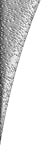

|
|
|
|
|
|
|  |
|
ECCO Tool Company, Inc.
has been family owned since it was established in April
of 1955 in Novi, Michigan. We manufacture
Highspeed and Carbide Dovetail Form
tools.
ECCO Tool Company is committed to making the best tools on the market at a competitive price. We employ 10 people at our 8,000 ft. facility. Our average employee has 10 years experience with ECCO. What sets ECCO Tool Company apart from other sources? If you ordered a job from us two years ago, ordered the same job today, and ordered it again two years from now, they would all be exactly the same. With our tools you will be able to take one tool out of your machine, put the next tool in, and be up and running without costly down time between tool changes.
QualityECCO was among the first companies that Ford Motor Company approached with its Q101 program in 1986.In 1989 ECCO Tool was awarded a Q101 rating by Ford Motor Company. The same year, the Hydra-Matic Division of General Motors presented ECCO Tool with its Quality of Excellence Award . In 1994 ECCO Tool became the only dovetail form tool shop to obtain the Ford Q1 Rating . Today ECCO Tool Company is working towards its QS9000-TE rating. Let us show you how dealing with the best can save you money! |
| Home |